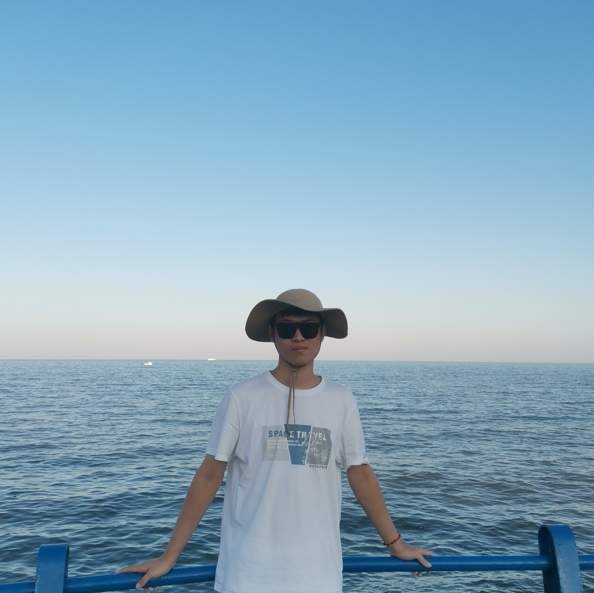

|
Qijian Tian I'm a second-year Ph.D. student in Computer Science at Shanghai Jiao Tong University (SJTU), advised by Prof. Lizhuang Ma in Digital Media & Computer Vision Laboratory (DMCV). I also receive supervision from Dr. Xin Tan, who is based at East China Normal University (ECNU). Prior to starting my PhD, I received my Bachelor's degree in Computer Science from Beihang University (BUAA). I also worked as an intern at Baidu. |
 |
ResearchMy research interests involve computer vision and deep learning. I am currently interested in 3D vision, including 3D scene reconstruction, 3D gaussian splatting, and depth estimation. I previously focused on 2D scene understanding, especially in scene parsing. |

|
DrivingForward: Feed-forward 3D Gaussian Splatting for Driving Scene Reconstruction from Flexible Surround-view Input
Qijian Tian, Xin Tan, Yuan Xie, Lizhuang Ma arXiv, 2024 project page / arXiv A feed-forward Gaussian Splatting model that reconstructs driving scenes from flexible sparse surround-view input.. |
|
This homepage's source code is from Jon Barron's website. |